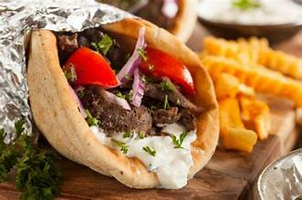
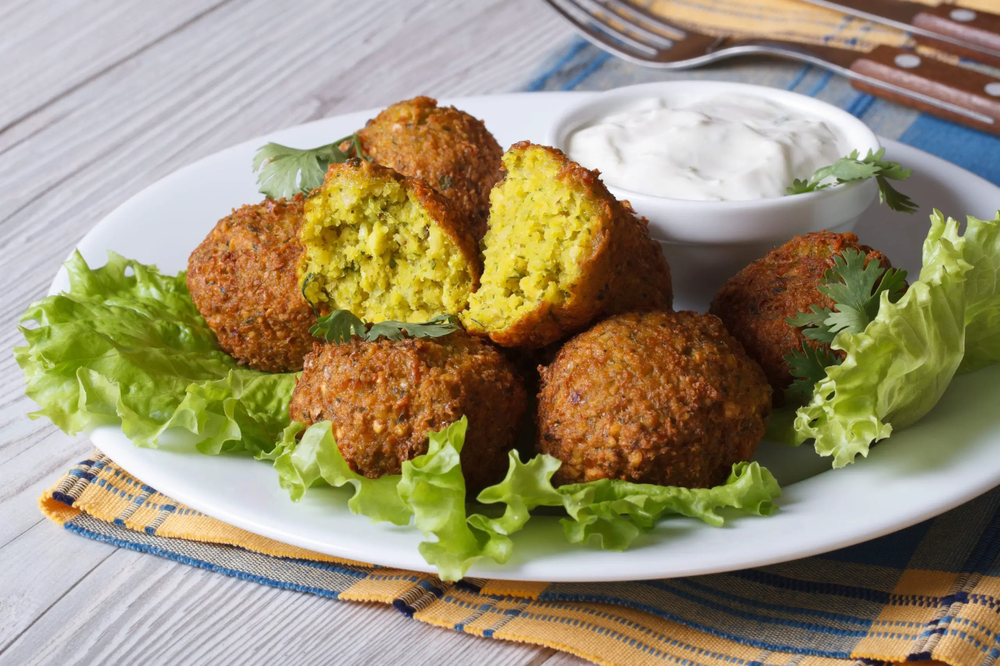
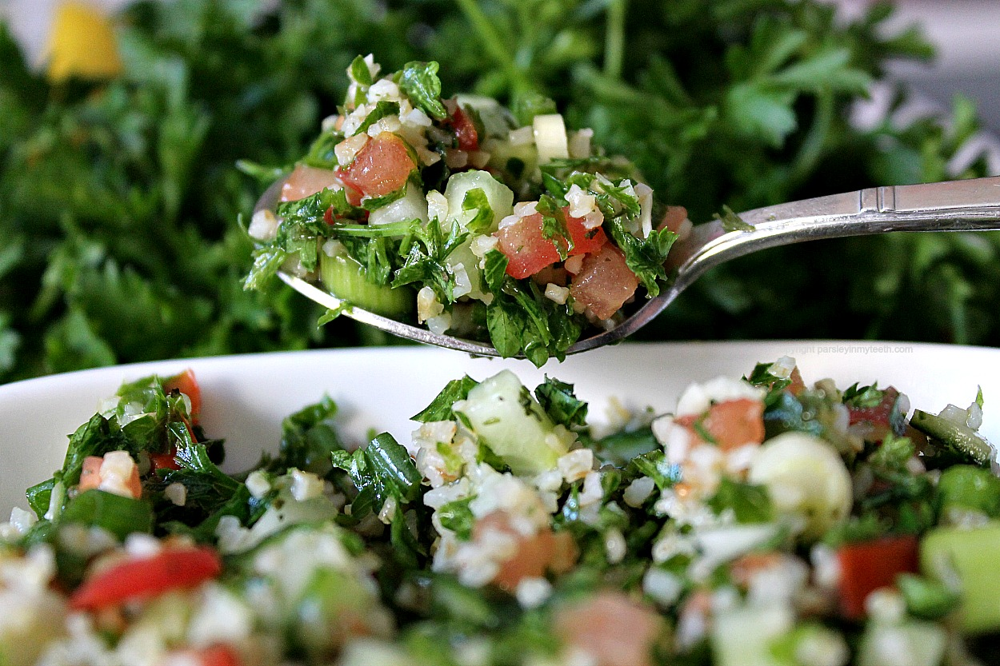
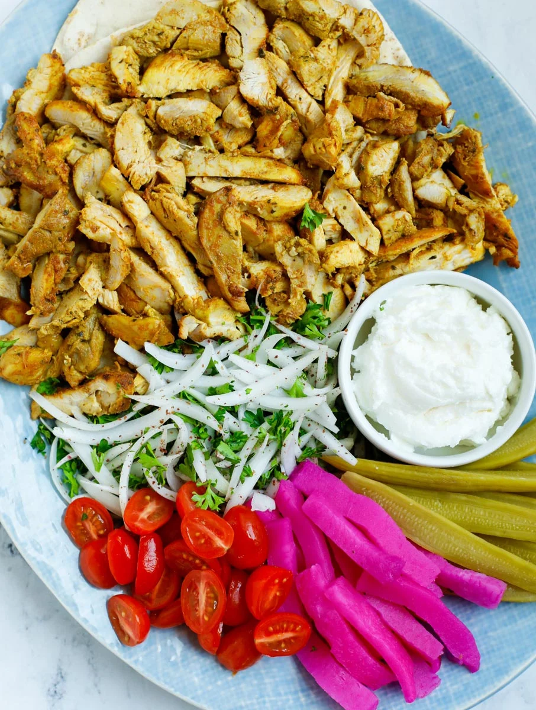

Shop for Food

chicken kabab
chicken kabab is a dish consisting of small pieces of meat,tomatoes, onions,ect.

Gyro
Originally made with lamb or mutton, it is now also made of chicken, turkey, beef, or veal.

Greek salad
a traditional greek salad consists of sliced cucumbers,tomatoes,green bell pepper,red onion

falafel
a small croquette made with ground chickpeas or fava beans and spices, often served with salad and tahini in pita bread

tabouli
is a Levantine salad made mostly of finely chopped parsley, with tomatoes, mint, onion

Chicken Shawarma
Shawarma is a popular dish originating from the Middle East. It’s a popular street food that is .